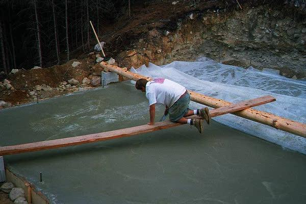
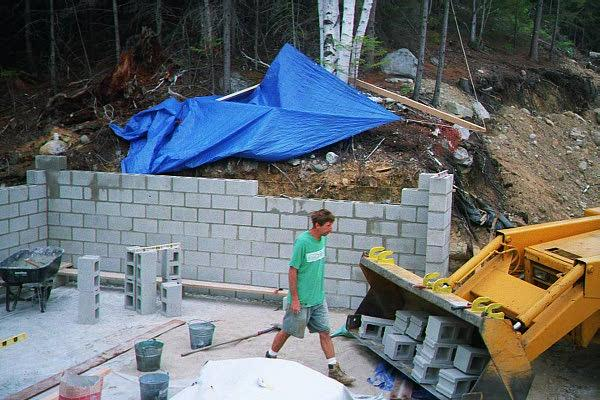
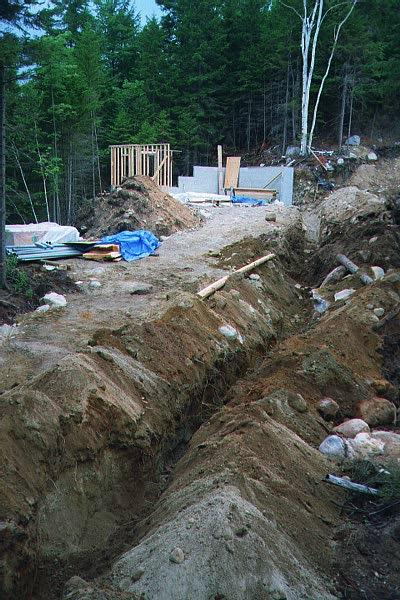
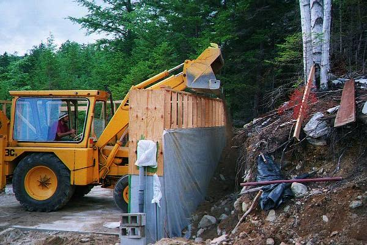
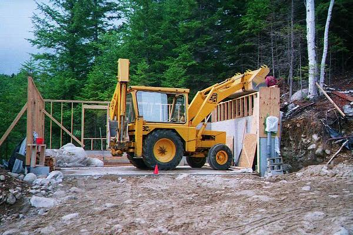
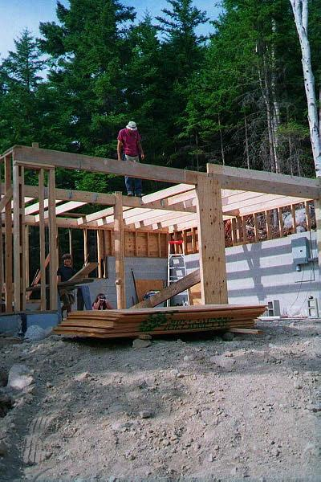
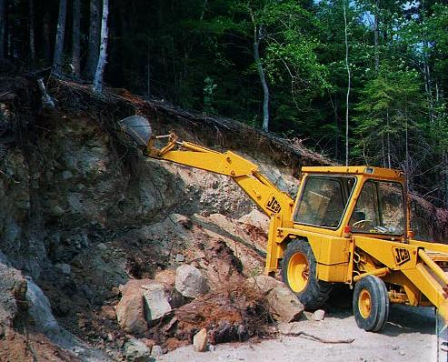
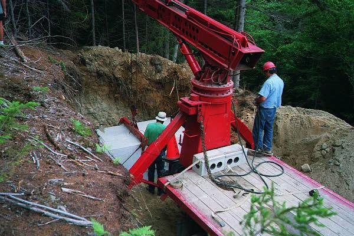

Smoothing concrete for the garage foundation.

Concrete blocks for the in-hill portion of the garage wall.

The trench for power lines leading up to the garage.

Backfilling the garage wall.

More of the same.

The floor for the second story of the garage goes in.

Excavating the house site.

The septic tank gets plunked into place.